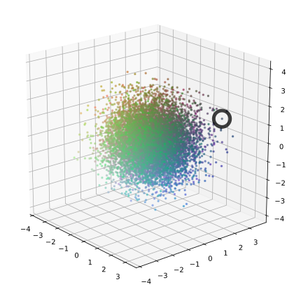
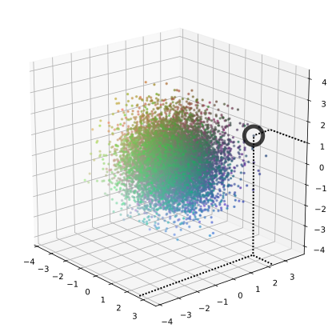
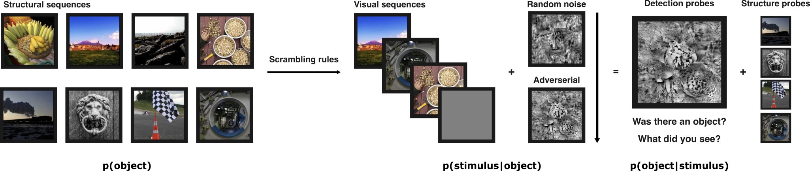
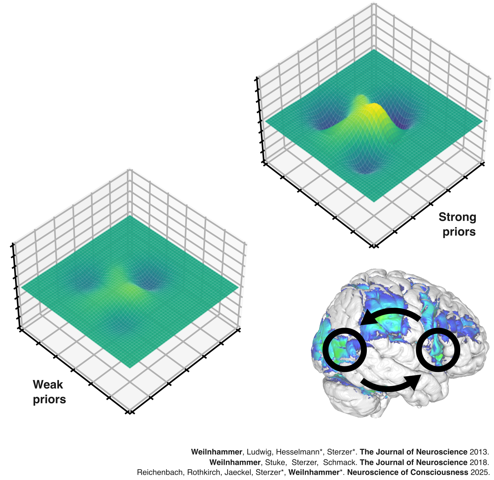
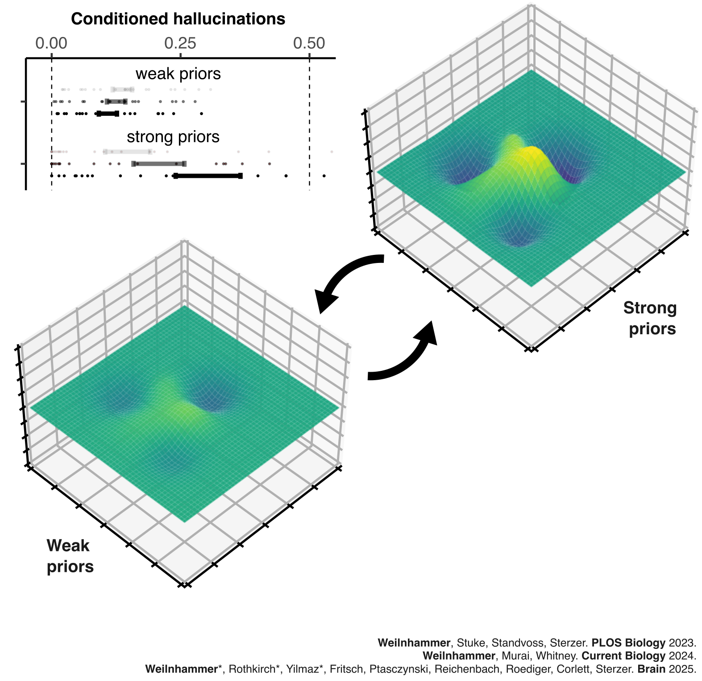
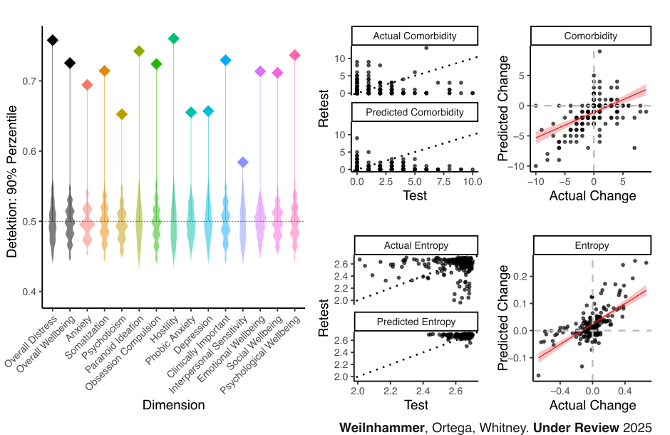
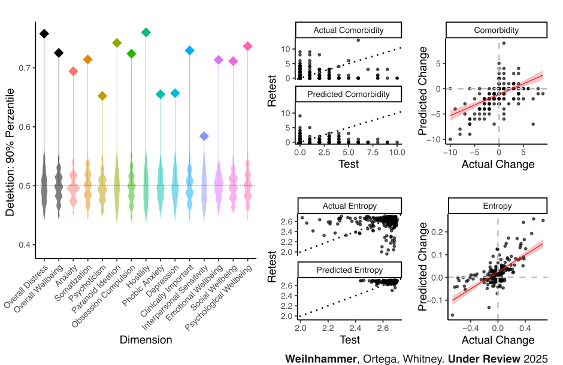

A map of subjective experience
PD Dr. med. Veith Weilnhammer
Helen Wills Neuroscience Institute & Berkeley Artificial Intelligence Research Center
University of California Berkeley


The geometry of mental health

Mrs. X
Mrs. X

It started with strange noises through the wall, quiet and barely recognizable, as if someone were eavesdropping.
Over time, I could make out the voice of my neighbor. I had to investigate.
At first, I only heard his voice in my apartment, but later he followed me to other places.
Then it dawned on me - he's an agent!
Dr. Y

Clinical representations
Clinical representations

Binary Diagnosis

Heterogeneity

Lost in translation


Found in translation

Project Ideas
How do psychotic symptoms emerge, evolve, and resolve over time?
Project Ideas
How do psychotic symptoms emerge, evolve, and resolve over time?
How does the brain balance stability against noise with sensitivity to change?
What is the interaction of structure learning and decision-making under uncertainty?

It started with strange noises through the wall, quiet and barely recognizable, as if someone were eavesdropping.
Over time, I could make out the voice of my neighbor. I had to investigate.
At first, I only heard his voice in my apartment, but later he followed me to other places.
Then it dawned on me - he's an agent!


State-dependent perception

Approach
Do humans learn from hallucinations, and are hallucinations shaped by learning?
Combination of structure learning and perceptual decision-making under uncertainty
- Structural learning: Known to induce replay events (TDLM)
- Perceptual decision-making under uncertainty: Known to induce false alarms (proxy for hallucinations) and modes (GLM-HMM)
Approach
Do humans learn from hallucinations, and are hallucinations shaped by learning?
Combination of structural and perceptual decision-making under uncertainty
- Structural learning: Known to induce replay events (TDLM)
- Perceptual decision-making under uncertainty: Known to induce false alarms (proxy for hallucinations) and modes (GLM-HMM)

Predictions Behavior:
- Mode balance: P(external mode) ~ errors in internal representations + psychosis proneness.
- Structure learning: Internal representations determine the content of false alarms.

Predictions Imaging:
- MEG + drift diffusion: Internal representations increase bias and congruent drift.
- MEG + theta power: Real-time marker of mode (state).
- MEG + offline replay: Updating of internal representations.
- MEG + ketamine / inhibitory DMN-rTMS: facilitates the external mode + disrupts replay.
Computational Psychiatry
THe neurocognitive mechanisms of psychotic experiences

It started with strange noises through the wall, quiet and barely recognizable, as if someone were eavesdropping.
Over time, I could make out the voice of my neighbor. I had to investigate.
At first, I only heard his voice in my apartment, but later he followed me to other places.
Then it dawned on me - he's an agent!
It started with strange noises through the wall, quiet and barely recognizable, as if someone were eavesdropping.
Over time, I could make out the voice of my neighbor. I had to investigate.
At first, I only heard his voice in my apartment, but later he followed me to other places.
Then it dawned on me - he's an agent!
Schizophrenia
Predictive processing

Fall-Kontroll Studien

Modell-basierte fMRT

Läsionsstudien

Hidden Markov Models

NMDAR hypofunction

Symptom tracking
Goals
- Digital Assays & Neuro AI: Behavior, Models, AI, Imaging
- Clinic: Schizophrenia & NMDAR Encephalitis
- Closed-loop Neurotechnology: Dynamic neuronavigated non-invasive brain stimulation
Outcome: Multimodale dynamic representations of psychotic symptoms
Precision psychiatry
Digitale phenotyoes
New geometric representations of mental health

Global average screen time: 6 hours and 34 minutes per day.
Digital movements are part of nearly all interactions with computers.
Passively collected data that can be gathered in real-time, with high precision, and at no significant cost.
Can digital movements predict mental health?

 

Open Source Software

- MINDMAP: Mapping INdividual Digital behavior to MentAl health And Psychopathology
- SCRAMBLER: SeCure Randomization for Anonymous Movement in the Browser
Goals

- Public mental health
- Screening
- Monitoring
- Evaluation, Safety & Open Source
- Validation of digital phenotypes
- Ethical & data protection challenges
- Transparency and interpretability of AI-supported models
- Experts by experience
- Co-design of digital interventions & science communication
Outcome: Translational screening & monitoring of mental health
Thanks for your attention!

References (selection)
A Predictive Coding Account of Bistable Perception. PLOS Computational Biology 2017.
Psychotic Experiences in Schizophrenia and Sensitivity to Sensory Evidence. Schizophrenia Bulletin 2020.
An Active Role of Inferior Frontal Cortex in Conscious Experience. Current Biology 2021.
Sensory processing in humans and mice fluctuates between external and internal modes. PLOS Biology 2023.
Dynamic predictive templates in perception. Current Biology 2024.
N-Methyl-D-aspartate receptor hypofunction causes recurrent and transient failures of perceptual inference. Brain 2025.